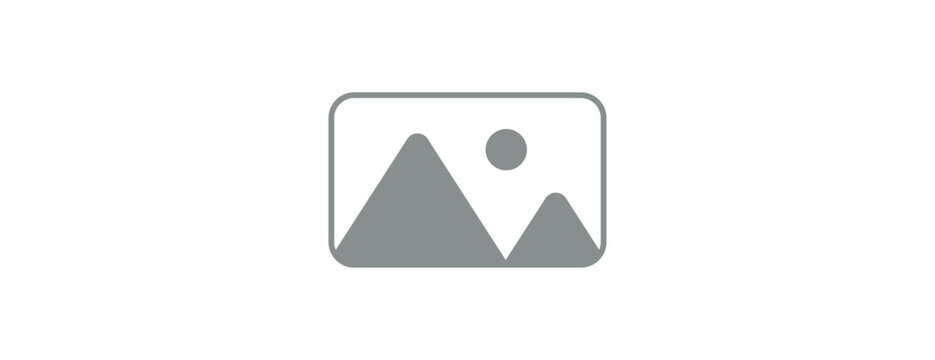

عنوان اصلی: راهنمای طراحی تایپوگرافی فارسی در وب
تایپوگرافی یکی از مهمترین عناصر طراحی واسط کاربری است. انتخاب درست فونت، وزن، هایلایت و پیوندها میتواند تجربهٔ خواندن را دگرگون کند. این یک متن کوچک توضیحی است که در کنار متن اصلی قرار میگیرد.
در ادامه به مفاهیمی مانند نقلقول درونخطی
، فرمولهای علمی
(H2O یا x2)، ویرایشهای متنی
(حذفشده، اضافهشده، نامعتبر،
زیرخطدار)، منابع (کتاب تایپوگرافی مدرن) و
تعاریف (تایپوگرافی یعنی هنر چینش حروف) میپردازیم.
همچنین کلیدهای میانبر مانند Ctrl + Z و
کوتهنوشتها مانند CSS
و تاریخ نیز
پوشش داده میشوند.
متن خنثی 123 و This text is left-to-right نیز گاهی در متون چندزبانه استفاده میشوند.
فصل اول: اهمیت تایپوگرافی
متن بخش بزرگی از رابط کاربری را تشکیل میدهد. یک پاراگراف خوب خوانایی را
بالا میبرد. همچنین line-height مناسب در
body ضروری است.
زیرفصل: فاصلهٔ خطوط
فاصلهٔ خطوط (line-height) یکی از عوامل کلیدی خوانایی است. در زبان فارسی به دلیل حروف دندانهدار، فاصلهٔ بیشتر توصیه میشود.
نمونهٔ لیستها
- انتخاب فونت مناسب
- تنظیم فاصلهٔ خطوط
-
سلسلهمراتب عناوین
- عنوان اصلی
- عنوان فرعی
-
پاراگرافها
- متن اصلی
- متن کمکی
- بررسی نیازها
- انتخاب مقیاس
-
پیادهسازی
- تعریف CSS
- تست در مرورگر
-
بهینهسازی
- فشردهسازی
- بررسی دسترسیپذیری
- تایپوگرافی
- هنر و تکنیک چینش حروف برای نمایش زبان نوشتاری به شکلی خوانا، روان و زیبا.
- فونت
- مجموعهای از حروف، اعداد و نشانهها با طراحی یکپارچه و وزنهای مختلف.
نقلقول برجسته
طراحی خوب زمانی اتفاق میافتد که کاربر اصلاً متوجه طراحی نشود.
نمونهٔ کد
برای نصب بسته از دستور npm install my-package استفاده کنید.
function greet(name) {
return `سلام ${name}`;
}تصویر

جدول دادهها
| ارز | قیمت خرید | قیمت فروش |
|---|---|---|
| دلار | ۵۰,۰۰۰ | ۵۱,۰۰۰ |
| یورو | ۵۵,۰۰۰ | ۵۶,۵۰۰ |
بخش جمعشونده
راهنمای بیشتر
این محتوا در حالت عادی پنهان است و با کلیک باز میشود.
فرمها در متن
در ادامه یک فرم ساده درون محتوای مقاله قرار گرفته است تا استایل عناصر فرم در بستر prose نیز دیده شود.
جمعبندی
یک سیستم تایپوگرافی یکپارچه با کلاس .prose
میتواند تمام اجزای مقاله را بهصورت هماهنگ نمایش دهد.